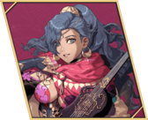
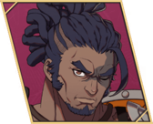
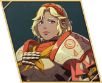

Path 4: Leda
Exploration, performances and secret spots. Easiest route for renown (Game8), so it's the clean-up route.
Hardest lord to carry (Leda is support, not damage) on Hard. Final builds for Guzran, Mu and Esmeralda. Part II is played here for Creek and Nathan.
Checklist
- Class unlocks: Ch9 subquest 'Great Dancer's Successor' — buy Hingasha at the Baina Oasis market, by 10/15 (Dancer); tavern show #4 / 'Elegant Drink Recipes' from Ch9, by 11/27 (Ranger, Troubadour).
- Anatolia's paralogue, Ch10, 10/5–10/17 — required for Sha Lan, and Anatolia in Part III.
- Subquest 'My Late Sister's Accessory' — required for Creek in Part II.
- Dietrich's and Cai's paralogues (Ch11) — only if skipped earlier.
- Support farming: Leda Ch9 has ~120 turns. Eat with units, auto-explore to Sunday, restart the chapter (NGA).
- Leda's renown comes fastest, so pick up anything missed on earlier paths here.
- Then play Part II on Leda: Creek (Ch2) and Nathan (Ch3, Creek must land the final blow). Keep guests Aswan and Tahonia alive in Ch3.
Roster (14 units)
| Unit | Joins / recruit | Ends Part I as | Role | Copy |
|---|---|---|---|---|
| Leda | Lord | Dancer | Dancer / support | |
| Buccar | Auto, Ch1 | Bardinger | Cavalry tank | |
| Sirocco | Auto, Ch1 | Caladrius | Evasive magic attacker | |
| Mu | Auto, Ch1 | Warrior | Melee carry | final |
| Olympia | Auto, after Ch3 | Ovate | Nosferatu mage | |
| Catania | Tutorial · S1/R2 | Dragoon | Flier | |
| Guzran | S1/R3 | Shido | Sword carry | final |
| Esmeralda | S3/R6 + her request | Cataphract | Armored cavalry | final |
| Jasmine | S2/R4 + 500G | Dreadnought | Counter tank | |
| Inyoni | S1/R7 + 3,000G, Ch9 | Sniper | Heavy archer | |
| Fianna | S3/R5 + 3,000G | Troubadour | Mounted healer | |
| Simon | S3/R6 + 500G · pick tails | Warrior | Axe fighter | |
| Ludia | S3/R7 + Callianeira Port info quest | Shido | Swordsman | |
| Sha Lan | Anatolia's paralogue · S3/R8 · answers: Understood, Salamis, Da Mina, the stranded giant ship | Bishop | Healer |
Builds

Leda
蕾达 · Game8 tier Lord
- Hunter Beginner start
ranks: Bow D / Sword D - Archer Specialty Lv20
ranks: Bow C - Dancer Advanced Lv35 (after unlock)
ranks: Bow B / Sword B · unlock on Leda: Ch9 subquest 'Great Dancer's Successor' (by 10/15)
- Joins
- Lord
- Role
- Dancer / support
- Train
- Bow and Sword to B — CN guides warn her hit rate suffers in Part III if she skips bows early.
- Gear
- Kara's Bow (卡拉之弓) from her route — don't miss it. CN: a charm mask plus a gale sword gives near-100% dodge for opening fights.
- Level in
- Hunter: Spd 75% · Dex 60% · Cha 55%
Archer: Spd 75% · Dex 60% · Cha 60%
Dancer: Spd 90% · Dex 60% · Cha 75% - Master here
- Archer → Crescendo (Hit +3 per kill for the map (max +30)); Dancer → Special Dance (Danced ally gets Dex/Spd +3)
- Farm only
- Rogue → In Shadow (Avo +10 in the next combat after a kill); Ranger → Countershot (50%: counter adjacent foes with a bow)
- Equip order
- Blindside → Improviso → Special Dance → In Shadow → Crescendo → Bow or Sword Lv. 3 at B+ (Hit/Avo +5)
- Abilities
- Blindside, Improviso
- Boons
- Bow, White Magic, Infantry, Sword
- Banes
- Spear
- Why
- Game8 JP: Leda falls behind on damage by mid-game, so she dances. Dancer only unlocks on this path, so it can't be moved earlier. Part III: Shadow Seeker → The Apsara.

Buccar
巴卡尼亚 · Game8 tier A
- Gladiator Beginner start
ranks: Gauntlet D / Axe D / Sword D - Armored Ornius Rider Specialty Lv20
ranks: Riding D; Axe C / Spear C - Bardinger Advanced Lv35
ranks: Riding C; Spear C / Sword B
- Joins
- Auto, Ch1
- Role
- Cavalry tank
- Train
- Riding to C, Spear C, Sword B.
- Gear
- Spears and axes; Retaliatory Blow.
- Level in
- Gladiator: Str 60% · Def 45% · Res 20%
Armored Ornius Rider: Str 50% · Def 55% · Res 20%
Bardinger: Str 60% · Def 50% · Res 30% - Master here
- Armored Ornius Rider → Sense Threat (Avo +20 vs foes effective against you); Bardinger → Aegis (20%: halve magic damage)
- Farm only
- Cataphract → Pavise (20%: halve physical damage); Warrior → Practiced Art (Hit +10 when attacking with a combat art)
- Equip order
- Guardian's Duty → Retaliatory Blow → Aegis → Pavise → Practiced Art → Spear or Sword Lv. 3 at B+ (Hit/Avo +5) → Canto from a bonded mount (Cai route)
- Abilities
- Guardian's Duty, Retaliatory Blow
- Boons
- Axe, Heavy Armor, Riding, Spear
- Banes
- White Magic, Black Magic
- Why
- Game8's line minus Light Cavalry (already used on Cai). Part III: Bau Lord.
Sirocco
西洛可 · Game8 tier S
- Diviner Beginner start
ranks: White D / Black D - Shaman Specialty Lv20
ranks: Black C - Caladrius Advanced Lv35
ranks: Riding D, Black B · unlock on Cai: 'Special Request from Pop' (Renown 7)
- Joins
- Auto, Ch1
- Role
- Evasive magic attacker
- Train
- Black Magic to B, Riding to D.
- Gear
- Black magic tomes; swords as backup. Goddess's Favor heals 5 HP after battle.
- Level in
- Diviner: Mag 55% · Spd 45% · Res 45%
Shaman: Mag 55% · Spd 55% · Res 45%
Caladrius: Mag 50% · Spd 50% · Res 45% - Master here
- Shaman → Bind Dexterity (Adjacent foes Dex −3); Caladrius → Overtake (Mov +1 per kill until end of next turn (max +3))
- Farm only
- Myrmidon → Ravaging Arts (+6 damage on a critical); Ovate → Bind Speed (Adjacent foes Spd −3)
- Equip order
- Goddess's Favor → Wind's Caprice → Overtake → Ravaging Arts → Bind Speed → Black Magic Lv. 3 at B+ (Hit/Avo +5)
- Abilities
- Goddess's Favor (heal 5 HP after battle), Wind's Caprice
- Boons
- Authority, White Magic, Black Magic, Sword
- Banes
- Heavy Armor
- Why
- Game8: his kit points to an evasion-focused magic attacker, not a healer. Part III: High Savant.
Mu final build · merge source
穆 · Game8 tier A+
- Gladiator Beginner start
ranks: Gauntlet D / Axe D / Sword D - Brigand Specialty Lv20
ranks: Axe C / Sword C - Warrior Advanced Lv35
ranks: Gauntlet B / Axe B / Sword B
- Joins
- Auto, Ch1
- Role
- Melee carry
- Train
- Gauntlet, Axe and Sword to B.
- Gear
- Gauntlets and axes.
- Mount etc.
- Signs of Growth boosts her growths.
- Level in
- Gladiator: HP 60% · Str 60% · Def 40%
Brigand: HP 65% · Str 65% · Def 45%
Warrior: HP 70% · Str 70% · Def 45% - Master here
- Brigand → Regroup (Avo +20 for the combat after a foe misses); Warrior → Practiced Art (Hit +10 when attacking with a combat art)
- Farm only
- Pugilist → Attack, Get Back (Avo +10 when using a combat art); Armored Knight → Great Counter (Atk +3 when the foe attacks first)
- Equip order
- Signs of Growth → Warrior's Blood → Practiced Art → Regroup → Attack, Get Back → Axefaire or Fistfaire at S+ (Hit/Avo +10, Atk +3)
- Abilities
- Signs of Growth (boosted growths), Warrior's Blood
- Boons
- Axe, Gauntlet, White Magic, Sword
- Why
- Game8's line, on Hard. Merge source for Part III. 17173: learn her teleport, then go monk (War Monk) → The Eternal.
Olympia
奥琳琵娅 · Game8 tier A+
- Diviner Beginner start
ranks: White D / Black D - Shaman Specialty Lv20
ranks: Black C - Ovate Advanced Lv35
ranks: Black B
- Joins
- Auto, after Ch3
- Role
- Nosferatu mage
- Train
- Black Magic to B.
- Gear
- Nosferatu — her Crit bonus only works with it.
- Level in
- Diviner: Mag 65% · Spd 35% · Res 50%
Shaman: Mag 65% · Spd 45% · Res 50%
Ovate: Mag 70% · Spd 40% · Res 55% - Master here
- Shaman → Bind Dexterity (Adjacent foes Dex −3); Ovate → Bind Speed (Adjacent foes Spd −3)
- Farm only
- Caladrius → Overtake (Mov +1 per kill until end of next turn (max +3)); Myrmidon → Ravaging Arts (+6 damage on a critical)
- Equip order
- Ardent Nosferatu → Competitive Zeal → Overtake → Ravaging Arts → Bind Speed → Black Magic Lv. 3 at B+ (Hit/Avo +5)
- Abilities
- Ardent Nosferatu (Crit with Nosferatu), Competitive Zeal
- Boons
- Axe, White Magic
- Banes
- Spear
- Why
- Game8's line (Mag 65% growth). Part III: Wiseman.
Catania
卡塔妮雅 · Game8 tier A+
- Ornius Rider Beginner start
ranks: Riding E+; Axe D / Spear D - Wing Soldier Specialty Lv20
ranks: Flying D; Spear C / Sword C · female only - Dragoon Advanced Lv35
ranks: Flying C; Axe B / Spear B · unlock on Cai: 'Special Request from Mom' (Renown 8), or Theodora: 14 War Preparations tasks
- Joins
- Tutorial · S1/R2
- Role
- Flier
- Train
- Flying to C, Spear and Sword.
- Gear
- Spears and swords.
- Level in
- Ornius Rider: Spd 65% · Str 35% · Res 40%
Wing Soldier: Spd 55% · Str 35% · Res 40%
Dragoon: Spd 55% · Str 40% · Res 45% - Master here
- Wing Soldier → Protecting Wings (Res +3); Dragoon → Besieger (Hit +20 vs foes on favourable terrain)
- Farm only
- Armored Ornius Rider → Sense Threat (Avo +20 vs foes effective against you); Warrior → Practiced Art (Hit +10 when attacking with a combat art)
- Equip order
- Punishing Squall → Wind My Friend → Sense Threat → Protecting Wings → Practiced Art → Spear Lv. 3 at B+ (Hit/Avo +5) → Read the Winds (Flying rank D): Avo +10 vs bows — Game8 calls it a must for fliers
- Abilities
- Punishing Squall, Wind My Friend
- Boons
- Flying, Spear, Sword
- Banes
- Heavy Armor
- Why
- Recruit first on Leda (gamewith). Part III: Celestial Trooper.
Guzran final build · merge source
古扎岚 · Game8 tier S
- Gladiator Beginner start
ranks: Gauntlet D / Axe D / Sword D - Myrmidon Specialty Lv20
ranks: Sword C - Shido Advanced Lv35
ranks: Sword B
- Joins
- S1/R3
- Role
- Sword carry
- Train
- Sword to B.
- Gear
- Swords; Hot-Headed gives random Hit/Avoid/Crit.
- Level in
- Gladiator: Str 55% · Spd 50% · Dex 45%
Myrmidon: Str 45% · Spd 65% · Dex 55%
Shido: Str 50% · Spd 65% · Dex 55% - Master here
- Myrmidon → Ravaging Arts (+6 damage on a critical); Shido → Ever Vigilant (Heal a little HP after a critical kill)
- Farm only
- Warrior → Practiced Art (Hit +10 when attacking with a combat art) — also arrives via the Part III merge; Rogue → In Shadow (Avo +10 in the next combat after a kill)
- Equip order
- Hot-Headed → Top Form → Practiced Art → Ravaging Arts → Ever Vigilant → Swordfaire at S+ (Hit/Avo +10, Atk +3)
- Abilities
- Hot-Headed (+10 Hit/Avoid/Crit at random), Top Form
- Boons
- Gauntlet, Infantry, Sword
- Banes
- White Magic, Black Magic
- Why
- Game8's main line, on Hard. Merge source for Part III (Swordmaster).
Esmeralda final build · merge source
艾丝美拉尔达 · Game8 tier A+
- Gladiator Beginner start
ranks: Gauntlet D / Axe D / Sword D - Armored Ornius Rider Specialty Lv20
ranks: Riding D; Axe C / Spear C - Cataphract Advanced Lv35
ranks: Heavy Armor E+, Riding D; Axe B / Spear B · unlock on Theodora: 8 War Preparations tasks by Ch8
- Joins
- S3/R6 + her request
- Role
- Armored cavalry
- Train
- Heavy Armor E+, Riding D, Axe and Spear B.
- Gear
- Spears and axes.
- Level in
- Gladiator: HP 65% · Def 45% · Str 65%
Armored Ornius Rider: HP 65% · Def 55% · Str 55%
Cataphract: HP 70% · Def 55% · Str 70% - Master here
- Armored Ornius Rider → Sense Threat (Avo +20 vs foes effective against you); Cataphract → Pavise (20%: halve physical damage)
- Farm only
- Armored Knight → Great Counter (Atk +3 when the foe attacks first) — also arrives via the Part III merge; Dreadnought → Focused Counter (Hit +10 when the foe attacks first) — also arrives via the Part III merge; Bardinger → Aegis (20%: halve magic damage) — also arrives via the Part III merge
- Equip order
- Brawn → Throwing Arm → Diadem of Valor → Pavise → Great Counter → Focused Counter → Axefaire or Spearfaire at S+ (Hit/Avo +10, Atk +3) → Pavise and Aegis stack with Buccar's Guardian's Duty (Game8)
- Abilities
- Brawn (lighter weapons), Throwing Arm, Diadem of Valor
- Boons
- Axe, Heavy Armor, Spear
- Banes
- Black Magic, Sword
- Why
- Game8's Cataphract line, on Hard. Merge source for Part III (Great Knight).

Jasmine
嘉丝敏 · Game8 tier C
- Gladiator Beginner start
ranks: Gauntlet D / Axe D / Sword D - Armored Knight Specialty Lv20
ranks: Heavy Armor E+; Axe C / Spear C - Dreadnought Advanced Lv35
ranks: Heavy Armor D; Axe B / Spear B
- Joins
- S2/R4 + 500G
- Role
- Counter tank
- Train
- Heavy Armor D, Axe and Spear B.
- Gear
- Axes and spears; Expert Counter / Raging Counter.
- Level in
- Gladiator: HP 60% · Def 45% · Str 50%
Armored Knight: HP 60% · Def 70% · Str 50%
Dreadnought: HP 65% · Def 75% · Str 55% - Master here
- Armored Knight → Great Counter (Atk +3 when the foe attacks first); Dreadnought → Focused Counter (Hit +10 when the foe attacks first)
- Farm only
- Cataphract → Pavise (20%: halve physical damage); Bardinger → Aegis (20%: halve magic damage)
- Equip order
- Expert Counter → Raging Counter → Pavise → Great Counter → Focused Counter → Axe or Spear Lv. 3 at B+ (Hit/Avo +5) → Pavise and Aegis stack with Buccar's Guardian's Duty (Game8)
- Abilities
- Expert Counter, Raging Counter
- Boons
- Axe, Heavy Armor, Spear
- Banes
- Flying, Sword
- Why
- Game8 lists flying classes despite her Flying bane; the armored line fits her boons. Part III: Castle Knight.
Inyoni
易尼奥尼 · Game8 tier A+
- Hunter Beginner start
ranks: Bow D / Sword D - Archer Specialty Lv20
ranks: Bow C - Sniper Advanced Lv35
ranks: Bow B
- Joins
- S1/R7 + 3,000G, Ch9
- Role
- Heavy archer
- Train
- Bow to B.
- Gear
- Heavy bows (Heavy-Bow User).
- Level in
- Hunter: Dex 50% · Str 50% · Spd 45%
Archer: Dex 50% · Str 55% · Spd 45%
Sniper: Dex 60% · Str 55% · Spd 45% - Master here
- Archer → Crescendo (Hit +3 per kill for the map (max +30)); Sniper → Marksmanship (Hit +15 with a bow)
- Farm only
- Ranger → Countershot (50%: counter adjacent foes with a bow); Warrior → Practiced Art (Hit +10 when attacking with a combat art)
- Equip order
- Heavy-Bow User → Pierce → Crescendo → Marksmanship → Countershot → Bow Lv. 3 at B+ (Hit/Avo +5)
- Abilities
- Heavy-Bow User, Pierce
- Boons
- Axe, Bow
- Banes
- White Magic, Black Magic
- Why
- Game8's line. Part III: Bow Knight → The Calamity.
Fianna
绯亚娜 · Game8 tier C
- Diviner Beginner start
ranks: White D / Black D - Priest Specialty Lv20
ranks: White C - Troubadour Advanced Lv35
ranks: Riding D; White B / Black B · unlock on Cai: 'White-Maned Demon's Request' (Renown 10), or Leda: tavern show #4
- Joins
- S3/R5 + 3,000G
- Role
- Mounted healer
- Train
- White and Black Magic to B, Riding to D.
- Gear
- Physic staff.
- Level in
- Diviner: Mag 70% · Res 55% · Spd 30%
Priest: Mag 65% · Res 60% · Spd 35%
Troubadour: Mag 70% · Res 60% · Spd 35% - Master here
- Priest → Piety (Lck +3); Troubadour → Song of Courage (Allies in range Dex/Spd +2)
- Farm only
- Bishop → Barrier (Adjacent allies Res +3); Shaman → Bind Dexterity (Adjacent foes Dex −3)
- Equip order
- Graceful Light → Diadem of Revival → Gift of Faith → Barrier → Song of Courage → Piety → White Magic Lv. 3 at B+ (Hit/Avo +5)
- Abilities
- Graceful Light, Diadem of Revival, Gift of Faith
- Boons
- White Magic, Black Magic, Riding
- Banes
- Gauntlet, Sword
- Why
- Game8 JP: don't rely on her early. Part III: Valkyrium.
Simon
希蒙 · Game8 tier A
- Gladiator Beginner start
ranks: Gauntlet D / Axe D / Sword D - Brigand Specialty Lv20
ranks: Axe C / Sword C - Warrior Advanced Lv35
ranks: Gauntlet B / Axe B / Sword B
- Joins
- S3/R6 + 500G · pick tails
- Role
- Axe fighter
- Train
- Axe and Sword to B.
- Gear
- Axes.
- Level in
- Gladiator: HP 60% · Str 60% · Def 40%
Brigand: HP 65% · Str 65% · Def 45%
Warrior: HP 70% · Str 70% · Def 45% - Master here
- Brigand → Regroup (Avo +20 for the combat after a foe misses); Warrior → Practiced Art (Hit +10 when attacking with a combat art)
- Farm only
- Pugilist → Attack, Get Back (Avo +10 when using a combat art); Armored Knight → Great Counter (Atk +3 when the foe attacks first)
- Equip order
- Close Call → Devil's Luck → Practiced Art → Regroup → Attack, Get Back → Axe or Gauntlet Lv. 3 at B+ (Hit/Avo +5)
- Abilities
- Close Call, Devil's Luck
- Boons
- Axe, Infantry, Sword
- Banes
- White Magic
- Why
- Game8's line.
Ludia
露露蒂雅 · Game8 tier A
- Gladiator Beginner start
ranks: Gauntlet D / Axe D / Sword D - Myrmidon Specialty Lv20
ranks: Sword C - Shido Advanced Lv35
ranks: Sword B
- Joins
- S3/R7 + Callianeira Port info quest
- Role
- Swordsman
- Train
- Sword to B.
- Gear
- Swords.
- Level in
- Gladiator: Str 45% · Spd 55% · Dex 45%
Myrmidon: Str 35% · Spd 70% · Dex 55%
Shido: Str 40% · Spd 70% · Dex 55% - Master here
- Myrmidon → Ravaging Arts (+6 damage on a critical); Shido → Ever Vigilant (Heal a little HP after a critical kill)
- Farm only
- Warrior → Practiced Art (Hit +10 when attacking with a combat art); Rogue → In Shadow (Avo +10 in the next combat after a kill)
- Equip order
- Falcon → Perception → Practiced Art → Ravaging Arts → Ever Vigilant → Sword Lv. 3 at B+ (Hit/Avo +5)
- Abilities
- Falcon, Perception
- Boons
- Infantry, Spear, Sword
- Banes
- Axe, Black Magic
- Why
- Game8's line.
Sha Lan
沙兰 · Game8 tier B
- Diviner Beginner start
ranks: White D / Black D - Priest Specialty Lv20
ranks: White C - Bishop Advanced Lv35
ranks: White B
- Joins
- Anatolia's paralogue · S3/R8 · answers: Understood, Salamis, Da Mina, the stranded giant ship
- Role
- Healer
- Train
- White Magic to B.
- Gear
- Physic staff.
- Level in
- Diviner: Mag 60% · Res 55% · Spd 35%
Priest: Mag 55% · Res 60% · Spd 40%
Bishop: Mag 60% · Res 65% · Spd 35% - Master here
- Priest → Piety (Lck +3); Bishop → Barrier (Adjacent allies Res +3)
- Farm only
- Troubadour → Song of Courage (Allies in range Dex/Spd +2); Shaman → Bind Dexterity (Adjacent foes Dex −3)
- Equip order
- Cooler Heads → Watchfulness → Barrier → Song of Courage → Piety → White Magic Lv. 3 at B+ (Hit/Avo +5)
- Abilities
- Cooler Heads, Watchfulness
- Boons
- Authority, White Magic, Spear
- Banes
- Sword
- Why
- Game8's line (continues Sentinel → The Godhand).